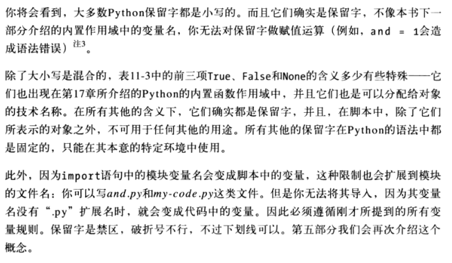

记录Python一些特殊的语法规则。
语句规则的特殊情况
Python可能出现一行出现多个语句的情况，语句间以分号隔开：
a = 1; b = 2; print(a+b)
这是Python中唯一需要分号的地方–作为语句界定符。不过，只有当各个语句本身不是复合语句才行。换句话说，只能把简单语句放在一起。例如，赋值操作、打印和函数调用。复合语句还是必须出现在自己的行里。
语句的另一个特殊规则基本上是相反的–可以让一个语句的范围横跨多行。为了能实现这一操作，你只需要用一对括号把语句括起来就可以了：括号、方括号、或者字典的大括号。任何括在这些符号里的程序代码都可以横跨好几行。语句将一直运行，直到Python遇到包含闭合括号的那一行。如：
mlist = [111,
222,
333]
由于程序被括在一对方括号里，Python会接着运行下一行，直到遇见闭合的方括号为止。花括号包含的字典（以及Python3,0中的集合常量、字典解析以及集合解析）也可以用这个方法横跨数行，并且圆括号可以处理元组、函数调用和表达式。连续行的缩进是无所谓的，尽管常识告诉我们为了让程序具有可读性，那几行也应该对齐。
这种技巧适用于复合语句：
if (A == 1 and
B == 2 and
C == 3):
print('spam' * 3)
有一条比较老的规则也允许我们跨越数行–当上一行以反斜杠结束时，可以在下一行继续，但是这种方法已经过时了，目前从某种程序上来说，不再提倡这种方法，因为关注并维护反斜杠比较困难，而且这种做法相当脆弱（反斜杠之后可能没有空格）。另外这也是倒退回C语言的例子，因为反斜杠时常在 #define 的宏里使用。
X = A + B + \
C + D
代码块规则的特殊实例
复合语句的主体可以出现在Python的首行冒号之后的情况：
if x > y: print(x)
只有当复合语句本身不包含任何复合语句的时候，才能这样做。也就是说，只有简单语句可以跟在冒号后面，比如赋值操作、打印、函数调用等。较复杂的语句仍然必须单独放在自己的行里。
语句体可以由几个简单语句组成并用分号隔开，但这种做法已越来越不受欢迎了。
交互式循环
while True:
reply = input('Enter text:')
if reply == 'stop': break
print(reply.upper())
这个程序利用了while循环，是通用的循环语句。读取用户输入并打印出来。利用嵌套代码块特殊规则的单行if语句也在这里出现：if语句体出现在冒号之后而不是在首先的下一行缩进。
用try语句处理错误
while True:
reply = input('Enter text:')
if reply == 'stop': break
try:
num = int(reply)
except:
print('bad!' * 8)
else:
print(int(reply) ** 2)
print('bye')
这个try语句的组成是：try关键字后跟代码主要代码块（尝试运行的代码），再跟except部分，给异常处理器代码，再接else部分，如果try部分没有引发异常，就执行这一部分的代码。Python会先执行try部分，然后运行except部分（如果有异常发生）或else部分（如果没有异常发生）。
序列赋值
分解赋值语句：
>>> A,B = 1,2
>>> (A,B) = (1,2)
>>> A
1
>>> B
2
前面两行作用相当，只是第一行省略了括号，实际上是两个元组。赋值时左侧元组内的变量与右侧的值互相匹配，每次赋一个值。
语句执行时，Python会建立临时的元组，来存储右侧的值，分解赋值语句也是一种交换两变量的值，却不需要自行创建临时变量的方式，右侧的元组会自动记住先前的变量的值：
>>> a = 1
>>> b = 2
>>> a,b = b,a # 元组交换值
>>> a,b # 相当于 T = a; a = b; b = T
(2,1)
事实上，Python中原始的元组和列表赋值语句形式，最后被通用化，以接受右侧可以是任何类型的序列，只要长度相等即可。你可以将含有一些值的元组赋值给含有一些变量的列表，字符串中的字符赋值给含有一些变量的元组。在通常的情况下，Python会按位置，由左到右，把右侧序列中的元素赋值给左侧序列中的变量：
>>> [a,b,c] = (1,2,3)
>>> a,c
(1,3)
>>> (a,b,c) = "ABC"
>>> a,c
('A', 'C')
从技术角度讲，序列赋值语句实际上支持右侧任何可迭代的对象，而不仅局限于任何序列。这是更为通用的概念。
高级序列赋值语句模式
虽然可以在”=”号两侧混合相匹配的序列类型，右边元素的数目还是要跟左边的变量的数目相同，不然会产生错误。（Python3.0允许我们使用更为通用的扩展解包语法，但是，在Python2.X中，赋值目标中的项数和主体的数目必须一致）
>>> string = 'spam'
>>> a,b,c = string
Traceback (most recent call last):
File "<pyshell#14>", line 1, in <module>
a,b,c = string
ValueError: too many values to unpack
想要更通用的话，就需要使用分片了。

扩展的解包
序列赋值通常要求左边的目标数目与右边的主体的项数完全一致，如果长度不同，会产生错误，除非使用手动地在右边分片
然而，在Python3.0中，我们可以在目标中使用带单个星号*的名称来更通用地匹配：
>>> seq = [1,2,3,4]
>>> a, *b = seq
>>> a
1
>>> b
[2,3,4]
上面例子中，a匹配右边序列第一项，b匹配剩下的内容。
当使用一个带星号的名称时，左边的目标项数不需要与右边主体序列长度匹配。实际上，带星号的名称可以出现在目标中的任何地方：
>>> *a, b = seq
>>> a
[2,3,4]
>>> b
4
上面例子中，b匹配最后一项，a匹配最后一项之前的所有内容。
当带星号的名称出现在中间，它收集其他列出的名称之间的所有内容。
>>> a, *b, c = seq
>>> a
1
>>> b
[2,3]
>>> c
4
上面例子中，第一项和最后一项分别给了a和c，剩余的都给了b。
更一般的，不管带星号的名称出现在哪里，包含该位置的每个未赋值名称的一个列表都将赋给它：
>>> a, b, *c = seq
>>> a
1
>>> b
2
>>> c
[3,4]

边界情况
尽管扩展的序列解包很灵活，一些边界情况还是值得注意。首先，带星号的名称可能只匹配单个的项，但是，总是会向其赋值一个列表：
>>> seq = [1,2,3,4]
>>> a,b,c,*d = seq
>>> print(a,b,c,d)
1 2 3 [4]
其次，如果没有剩下的内容可以匹配带星号的名称，它会赋值一个空的列表，不管该名称出现在哪里。
>>> a,b,c,d,*e = seq
>>> print(a,b,c,d,e)
1 2 3 4 []
>>> a,b,*e,c,d = seq
>>> print(a,b,c,d,e)
1 2 3 4 []
最后，如果有多个带星号的名称，或者如果值少了而没有带星号的名称，以及如果带星号的名称自身没有编写到一个列表中，都将会引发错误：
多目标赋值语句
增强赋值语句
X = X + Y
X += Y #与上一句结果一样
增强赋值语句有三个优点：
- 程序员输入减少
- 左侧只需要计算一次。在
X += Y中，X可以是复杂的对象表达式。在增强形式中，则只需计算一次。然而，在完整形式X = X + Y中，X出现两次，必须执行两次。因此，增强赋值语句通常执行得更快。 - 优化技术会自动选择。对于支持原处修改的对象而言，增强形式会自动执行原处的修改运算，而不是相比来说速度更慢的复制。
在这里最后一点需要多一点说明。就增强赋值语句而言，在原处的运算可作为一种优化而应用在可变对象上。列表可以用各种方式扩展。要增加单个的元素到列表末尾时，我们可以合并或调用append：
>>> L = [1,2]
>>> L = L + [3] #合并，比较慢
>>> L
[1,2,3]
>>> L.append(4) #原处修改，比较快
>>> L
[1,2,3,4]
此外，要把一组元素增加到末尾，可以再次使用合并，或者调用列表的extend方法（extend方法更快一点）。
也可以使用分片赋值语句（L[len(L):] = [1,2,3]），这样和一些简单的extend方法相似
两种情况下，合并对共享对象引用产生的副作用可能会更小，但是，通常会比对等的原处形式运行得更慢。合并操作必须创建一个新的对象，把左侧的复制到列表中，然后再把右侧的复制到列表中。相比而言，原处方法调用直接在一个内存块末尾添加项。
当我们使用增强赋值语句来扩展列表时，可以忘记这些细节。例如，Python会自动调用较快的extend方法，而不是使用较慢的”+”合并运算。
增强赋值以及共享引用
“+=”是对列表做原处修改，而”+”是合并，会生成新对象。就所有共享引用的情况而言，只有其他变量名引用的对象被修改，”+=”和”+”的差别才可能体现出来：
这只对于列表和字典这类可变对象才重要，而且是相当罕见的情况。就像往常一样，如果需要打破共享引用值的结构，就要对可变对象进行拷贝。
变量命名规则


命名惯例
表达式语句
在Python中，你可以使用表达式作为语句（本身占一行）。但是因为表达式结果不会存储，只有当表达式工作并作为附加的效果，这样才有意义。通常在两种情况下表达式用作语句。
- 调用函数和方法
有些函数和方法会做很多工作，而不会有返回值。这种函数在其他语言中有时称为过程。因为它们不会返回你可能想保留的值，所以你可以用表达式语句调用这些函数。
- 在交互模式提示符下打印值
Python会在交互模式命令中响应输入的表达式的结果。从技术上讲，这些也是表达式语句。作为输入print语句的简写方法。
真值测试
Python的布尔运算符和C这类语言的布尔运算符有些不同。在Python中：
- 任何非零数字或非空对象都为真
- 数字零、空对象以及特殊对象None都被认为是假
- 比较和相等测试会递归地应用在数据结构中
- 比较和相等测试会返回True或False（1和0的特殊版本）
- 布尔and和or运算符会返回真或假的操作对象
简而言之，布尔运算符是用于结合其他测试的结果。Python 中有三种布尔表达式运算符：
- x and y
- x or y
- not x
此处，x 和 y 可以是任何真值或者返回真值的表达式。布尔运算符在 Python 中是字（不是C的&&、||、!）。此外，布尔 and 和 or 运算符在 Python 中会返回真或假对象，而不是值 True 或 False。and 和 or 运算符总会返回对象，不是运算符左侧的对象，就是右侧的对象。如果在 if 或者其他语句中测试其结果，总会如预期的结果那样（每个对象本质上不是真就是假），但不会得到简单的 True 或 False。
就 or 测试而言，Python 会由左到右求算操作对象，然后返回第一个为真的操作对象。再者，Python 会在其找到第一个真值操作数的地方停止。这通常叫做 短路计算 ，因为求出结果后，就会使表达式其余部分短路（终止）：
>>> 2 or 3, 3 or 2
(2, 3)
在结果知道时，and 运算也会立刻停止。然后，就此而言，Python 由左至右计算操作数，并且停在第一个为假的对象上：
>>> 2 and 3, 3 and 2
(3, 2)